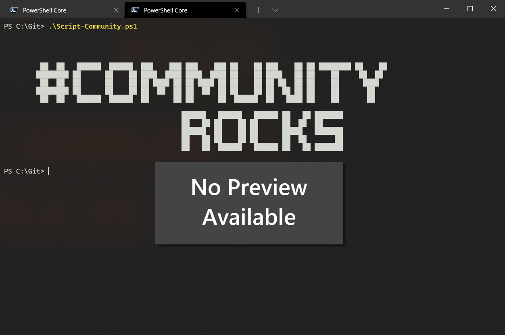

Get and Remove Site Admins after providing Support.
Summary
On a regular basis, admin users are granted Site Collection Administrator permissions on individual sites to provide support (e.g. tickets or access requests). Once the support case is resolved, this access is often not removed again, leaving unnecessary standing permissions in the tenant.
This sample runs in two steps to find and clean up these support-related site admins:
- Discover: Loops through every site collection in the tenant and checks its site collection administrators against a list of known support/admin accounts (
$Administrators). Only directly assigned site collection administrators are considered, not group/team owners or other roles. Every match is exported toSitesSCAdmin.csv, with an emptyRemovecolumn. - Review: Open
SitesSCAdmin.csv, mark theRemovecolumn with anxfor every row where the admin access should be revoked, and save it asSitesSCAdmin_cleanup.csv. - Cleanup: Re-run the script. It imports
SitesSCAdmin_cleanup.csv, filters for the rows flaggedx, and removes the site collection administrator from the matching site.

Tip
The sample below connects with -Interactive for simplicity, but since the script reconnects once per site, this would prompt for authentication constantly. For regular or unattended runs, it's recommended to authenticate with credentials stored in variables (e.g. a certificate or client secret via Connect-PnPOnline -ClientId ... -Thumbprint ... -Tenant ...) instead.
Connect-PnPOnline -Url "https://tenant-admin.sharepoint.com" -Interactive
$sites = Get-PnPTenantSite
$Administrators = @(
"admin1@company.com",
"admin2@company.com"
)
$siteList = @()
$i = 0
Foreach ($site in $sites) {
$i++
Connect-PnpOnline -Url $site.Url -Interactive
$Admins = Get-PnPSiteCollectionAdmin
foreach ($Admin in $Admins) {
if ($Admin.Email -in $Administrators) {
Write-Host "Adding $($site.Title) to array ($i)"
$siteList += [PSCustomObject]@{
SiteName = $site.Title
SiteUrl = $site.Url
Administrator = $Admin.Email
Remove = ""
}
}
}
}
$siteList | Export-Csv -Path .\SitesSCAdmin.csv -Force -Delimiter ";"
$cleanup = Import-Csv -Path .\SitesSCAdmin_cleanup.csv -Delimiter ";" | Where-Object { $_.Remove -eq "x" }
foreach ($site in $cleanup) {
Connect-PnpOnline -Url $site.SiteUrl -Interactive
try {
Write-Host "Removing $($site.Administrator) from $($site.SiteUrl)"
Remove-PnPSiteCollectionAdmin -Owners $site.Administrator
}
catch {
Write-Host "Error Removing $($site.Administrator) from $($site.SiteUrl): $_"
}
}
Check out the PnP PowerShell to learn more at: https://aka.ms/pnp/powershell
The way you login into PnP PowerShell has changed please read PnP Management Shell EntraID app is deleted : what should I do ?
Contributors
| Author(s) |
|---|
| Fabian Hutzli |
Disclaimer
THESE SAMPLES ARE PROVIDED AS IS WITHOUT WARRANTY OF ANY KIND, EITHER EXPRESS OR IMPLIED, INCLUDING ANY IMPLIED WARRANTIES OF FITNESS FOR A PARTICULAR PURPOSE, MERCHANTABILITY, OR NON-INFRINGEMENT.